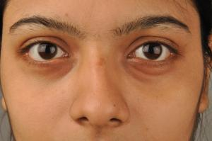

Eye puffiness

1. Slice a raw potato and circle the closed eyes gently with these moist halves. Or else grate a raw potato and place on muslin cloth squares. Place these on the eyes and relax for 15-20 minutes.
2. Drink 8-10 glasses of water daily to get rid of eye puffiness. This is one of the easiest ways to keep your eyelids and other parts of the body hydrated.
3. Tea bags work well to offer relief from eye puffiness. Take two tea bags and soak in cold water for a while. Lie down, close your eyes and place the tea bag over each eye for 10-15 minutes. Then wash your face with cold water.
4. Take 2 slices of fresh cucumber and place on your eyes for 20-25 minutes. Cucumber has anti-inflammatory properties and cooling effect that will help refresh your mind and eyes, and will naturally help reduce puffiness in the eyes.
5. Beat 1-2 egg whites and apply in the area around your eyes with a brush or a soft cloth, and leave till it dries up. Wash off. This remedy will result in making the area around the eyes feel tighter and look less puffy.
6. Apply cold compress to the eyes. Wash your face with several splashes of cold water. This will constrict blood vessels and reduce swelling of the eyes.
7. Getting enough sleep for at least 7-8 hours daily is needed for every individual to get rid of eye puffiness.
Choose an appropiate technique only.